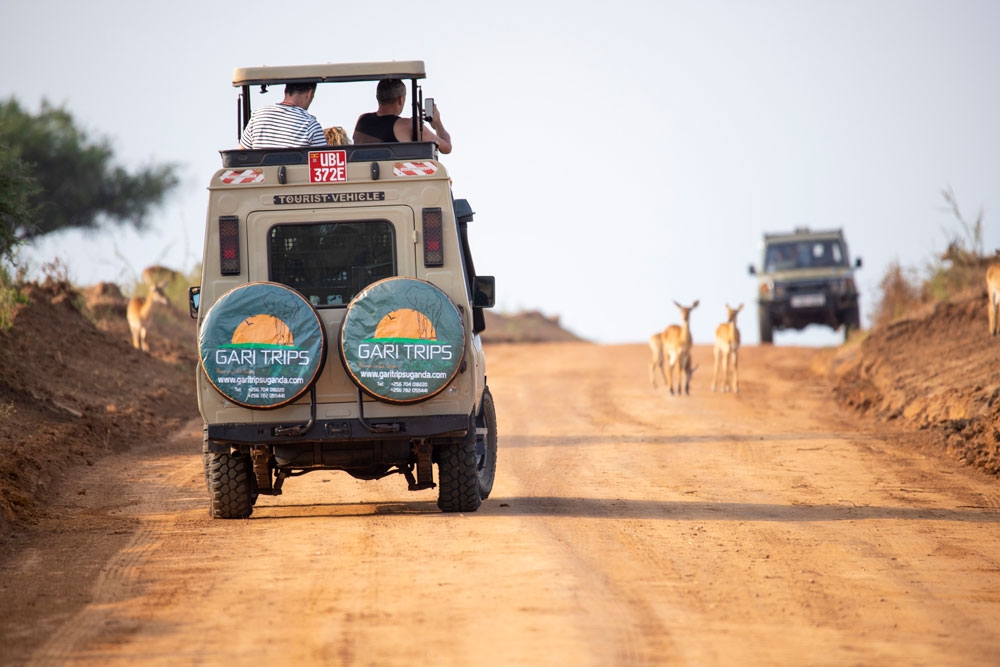
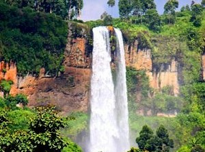

12-Day Uganda Adventure Safari
Overview
Embark on a captivating 12-day journey through the heart of the “Pearl of Africa,” where misty forests,
thundering waterfalls, rare wildlife, and vibrant cultures converge. This immersive Uganda adventure
begins in the coffee-rich hills of Masaka with an authentic Ndugu Coffee Experience, then delves into
the primate paradise of Kibale Forest for exhilarating chimpanzee tracking. Continue to the scenic
crater lakes of Fort Portal before encountering Uganda’s only wild rhinos on foot at Ziwa Rhino Sanctuary.
The safari then unfolds in the dramatic landscapes of Murchison Falls National Park—where you’ll witness
the Nile explode through a narrow gorge, spot elephants and lions on game drives, and cruise past hippos
on a serene Nile boat trip. The journey culminates in the eastern highlands with a breathtaking hike to
Sipi Falls, a visit to the historic Source of the Nile in Jinja, and a final farewell beneath Uganda’s
legendary skies. Perfect for nature lovers, cultural explorers, and adventure seekers alike, this
thoughtfully curated itinerary blends wildlife encounters, community immersion, and East Africa’s most
iconic landscapes into one unforgettable experience.

Day 1
Kampala to Masaka
After breakfast, depart Kampala and drive southwest toward Masaka. Stop at the Equator for photos and coffee
before continuing through scenic countryside and banana plantations. Arrive in Masaka for lunch and relax
at your lodge. Dinner and overnight at Villa Katwe Guest House.

Day 2
Masaka & Ndugu Coffee Experience.
After breakfast, visit Ndugu Coffee Farm, where you’ll learn about coffee growing, harvesting, and processing
from the local farmers. Participate in roasting and tasting sessions to experience Uganda’s rich coffee
culture firsthand. In the afternoon, return to the lodge to relax or explore Masaka town. Dinner and
overnight at Villa Katwe Guest House.

Day 3
Transfer to Kibale Forest National Park.
Depart Masaka after breakfast and drive north through the lush countryside to Kibale Forest National Park,
home to 13 primate species including chimpanzees. Arrive in the afternoon, check in, and relax surrounded
by tropical forest views. Dinner and overnight at Turaco Treetops.

Day 4
Chimpanzee Tracking in Kibale Forest.
After breakfast, report to the park headquarters for a chimpanzee tracking adventure. Walk through the
dense forest with your ranger guide and observe chimpanzees in their natural habitat. In the afternoon,
enjoy an optional Bigodi Wetland walk or relax at the lodge. Dinner and overnight at Turaco Treetops.

Day 5
Fort Portal: Crater Lakes & Tea Experience.
After breakfast, transfer to Fort Portal and take a guided tour of the crater lakes and tea estates.
Learn about tea cultivation and enjoy scenic views of the rolling green hills. Dinner and overnight at
Mountains of the Moon Hotel.

Day 6
Fort Portal → Ziwa Rhino Sanctuary.
Depart Fort Portal and drive to Ziwa Rhino Sanctuary. Arrive in the afternoon for rhino tracking on foot
and optional shoebill canoe experience. Dinner and overnight at Ziwa.
Accommodation: Ziwa Rhino Sanctuary Lodge
.jpg)
Day 7
Transfer to Murchison Falls National Park.
After breakfast, drive north via Masindi to Murchison Falls National Park. On arrival, proceed directly to
the Top of the Falls where the Nile River forces its way through a narrow gorge to create a spectacular
waterfall. After the short hike, continue to your lodge.
Dinner and overnight at Pakuba Safari Lodge.
.jpg)
Day 8
Game Drive & Boat Cruise on the Nile.
Enjoy an early morning game drive in the northern part of the park to spot elephants, giraffes, lions,
and buffaloes. Return for lunch, then take an afternoon boat cruise to the base of the falls, offering
great views of hippos, crocodiles, and abundant birdlife.
Dinner and overnight at Pakuba Safari Lodge.

Day 9
Murchison Falls to Sipi Falls.
Check out early and travel east through northern Uganda and Mbale to the beautiful foothills of Mount Elgon.
Arrive at Sipi Falls in the evening and relax.
Accommodation: Home of Friends (Sipi Falls)

Day 10
Sipi Falls Exploration.
After breakfast, enjoy a guided hike to the three Sipi Falls, where you’ll experience breathtaking scenery,
coffee farms, and local village life. You’ll also visit a local coffee farm to learn about traditional
Arabica coffee processing.
Return to the lodge for dinner and overnight at Home of Friends.

Day 11
Jinja: Visit the Source of the Nile.
After breakfast, check out and begin your journey east toward Jinja, enjoy a guided visit to the Source
of the Nile, where the mighty river begins its long journey to Egypt.
Accommodation: 2 Friends Guest House

Day 12
Return to Entebbe Airport.
After a lazy breakfast, depart Jinja for the journey back to Entebbe International Airport, stopping for
lunch and photos along the way. Arrive in time for your evening flight.
End of Safari.
Things to pack when coming for Safari.
- Waterproof Hiking Shoes.
- Long cotton socks.
- Face masks.
- Gardening gloves.
- Long-sleeved Shirts & Sunscreen.
- A Hat & a Rain jacket.
- Light backpack & Insect repellents.
- A Camera & a Pair of Binoculars.
- Drinking water bottle and Energy giving snacks.
Inclusions
- A professional driver/guide
- All transportation (Unless labeled as optional)
- All Taxes/VAT.
- Meals (As specified in the day-by-day section).
- Those searching for photographic safaris in Uganda.
Exclusions
- International flights (From/to home).
- Additional accommodation before and at the end of the tour.
- Tips (Tipping guideline US$10.00 pp per day).
- Personal items (Souvenirs, travel insurance, visa fees, etc.).
- Government imposed increase of taxes and/or park fees.